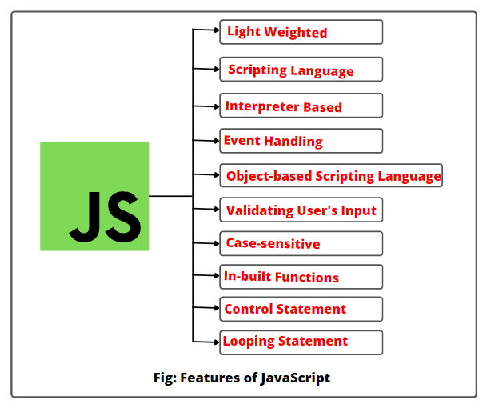

JavaScript is the most powerful and versatile web programming language. It is used for making the websites interactive. JavaScript helps us add features like animations, interactive forms and dynamic content to web pages.
JavaScript is a programming language used for creating dynamic content on websites. It is a lightweight, cross-platform and single-threaded programming language. JavaScript is an interpreted language that executes code line by line providing more flexibility. It is a commonly used programming language to create dynamic and interactive elements in web applications. It is easy to learn.

JavaScript isn’t a compiled language, so it doesn’t get converted to byte-code beforehand. However, it does follow a paradigm called Just-In-Time (JIT) Compilation. Meaning it gets converted to bytecode just as it’s about to run. This enables JS to be lightweight. Even less powerful devices are capable of running JavaScript.
JavaScript is a lightweight scripting language made for client-side execution on the browser. Since it is not designed as a general-purpose language and is specially engineered for web applications, the set of libraries is also geared primarily towards web applications.
JavaScript is an interpreted language instead of a compiled one. In that sense, it is closer to languages like Ruby and Python. The browser interprets JavaScript’s source code, line by line and runs it. In contrast, a compiled language needs to be compiled into a byte-code code executable. Java and C++ are examples of compiled languages.
An event is an action or an occurrence in a system that communicates about said occurrence so that you can respond to it somehow. For example, a user clicks on a button, and the system tells you to respond to the button click event with an action, say an information box
The term first-class citizen means “being able to do what everyone else can do”. In JavaScript Objects prototype is the base prototype of all. They can be passed as reference, returned in a function, and assigned to variables for manipulation. This concept is also extended to functions as Object is also the prototype of functions.
JavaScript is heavily used for easing the interactions between users and web applications. Towards this, validation plays a significant role. Validations can guide users to fill forms correctly with valid data and prevent spam submissions.
JavaScript is highly case sensitive. All keywords, variables, functions names and other identifiers can and must only follow a consistent capitalisation of letters. E.g.:
var hitCounter = 5
var hitcounter = 5
Here variables hitCounter and hitcounter are both different variables because of the difference in the case. Also, all keywords such as “var” are case sensitive.
JavaScript is equipped with control statements like if-else-if, switch-case, and loops like for, while, and do-while loops. These control statements make it a powerful programming language, enabling its user to write complex logic.
console.log("Basic Print method in JavaScript");
Single line comments start with //.
Any text between // and the end of the line will be ignored by JavaScript (will not be executed).
Multi-line comments start with /* and end with */.
Any text between /* and */ will be ignored by JavaScript.